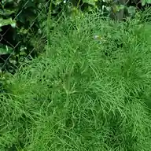

Cutting Garden
An ornamental bundle - grown to be cut for the vase, with no interspecies claim made.
What binds this planting
Grown to cut. Grown to be cut for the vase — zinnias and cosmos for the summer, cleome for height, yarrow as the filler, daffodils for spring. The corpus records no interaction between them; they share a bed because they share a purpose. One deliberate absence: sunflower, the corpus's tallest cut flower, is left out because its residue is recorded as suppressing the germination of small-seeded direct-sown neighbours, and zinnias and cosmos are exactly that.
Plan this guild →
Space it needs
At least 1.5 m²16.1 ft². A bed smaller than that does not get this guild quietly substituted for something else — the planner greys it out, says why, and offers the nearest adaptation that does fit.
Between seasons
Living perennials stay in the bed between seasons, so the ground is part rotated and part not.
What it claims
No interspecies mechanism is claimed. It is grouped for a reason, and that reason is written below rather than dressed up as biology.
What is in it
What it costs the ground
Rotation history attaches to the ground, not the bed, so this is what the planner remembers about this patch after the guild comes out.
- Daisy Family: full load
- Spiderflower Family: partial load
- Onion Family: partial load
Rules that gate it
PromisingA guild deposits family history across its whole footprint.
costly if ignored → warn
Mechanism: Soilborne inoculum and overwintering pest stages disperse across the bed. A guild dominated by one family forecloses that ground for that family's rotation interval.
Evidence: confirmed against 2 sources in the research-based literature.
the 2 sources
Same soilborne-persistence basis as other rules here (read 2026-07-11): NC State Extension (Verticillium microsclerotia 'can survive in the soil without a host for up to 10 years'; Septoria/early blight 'overwinter on infected tomato debris and solanaceous weed hosts') and UMN/Ohioline (squash bug overwinters 'as adults in sheltered places ... they fly to growing cucurbit plants'; squash vine borer 'overwinters in the soil as a pupa').
Those sources establish that inoculum and pest stages persist in the ground and are not confined to the exact spot a plant occupied; this rule applies that persistence across the whole guild footprint. The whole-footprint attribution is the corpus's rotation geometry (history attaches to ground, not to the individual plant — see the data model), not a claim from an external source.
remedy
Rotate the whole bed the guild occupied, not just the rows that family grew in.
Read the full rule → · open in the planner ↗
Well establishedPerennial members must not be sited in ground that is annually turned or rotated.
fatal if ignored → block
Mechanism: Tillage destroys the crown. Rotation moves the annuals; the perennial cannot move.
Evidence: settled without a trial - mechanics.
remedy
Split perennial members into a permanent border; rotate the annuals around it.
Read the full rule → · open in the planner ↗
All guilds